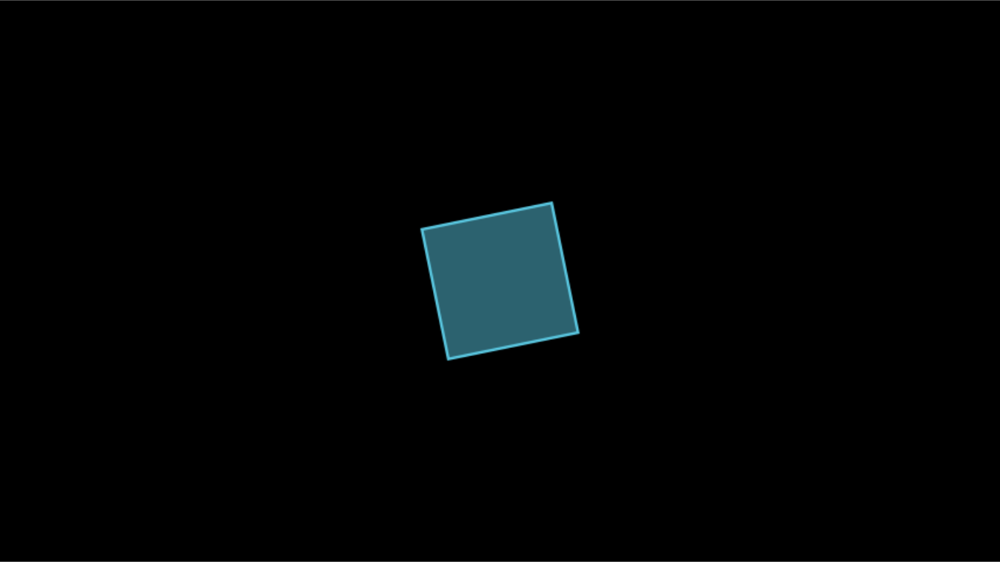

This vignette covers everything about turning a scene into files: the
render() function and its arguments, qualities and formats,
where output goes, the configuration system and manim.cfg
files, the video encoder, the life of a scene during a render, sections,
sound, subcaptions, the partial movie cache, rendering scripts and the
command line, previews, logging, and the classes that do the work.
Output follows Manim Community 0.22.1, so what you know about
manim render carries over.
Every example writes into a temporary directory, so you can run them
without cluttering your working directory. In your own work you would
usually leave media_dir at its default,
"media", inside the project.
How a render works
render(MyScene) goes through these steps, as
manim render does:
- It applies the settings you passed (quality, format and so on) for the duration of the render, and creates the scene. The scene creates its camera, which reads the resolution, frame rate and background color.
- The scene’s
Managercallssetup(), thenconstruct(), thentear_down(). - Each
self$play()orself$wait()is one animation call. The renderer (CairoRenderer) computes every frame of it with the camera, and the file writer (SceneFileWriter) streams the frames toffmpeg, which encodes one video segment, a partial movie file, per call. - When
construct()returns, the partial movie files are joined into the final video, and sounds, section videos and subtitles are added.
The examples use this small scene:
Demo <- R6::R6Class("Demo", inherit = Scene,
public = list(construct = function() {
square <- Square(color = BLUE)$set_fill(BLUE, 0.5)
self$play(Create(square), run_time = 0.5)
self$play(square$animate$rotate(PI / 4), run_time = 0.5)
self$play(square$animate$scale(0.5)$set_fill(YELLOW, 0.8), run_time = 0.5)
})
)
render() and its arguments
media <- file.path(tempdir(), "media")
out <- render(Demo, quality = "l", media_dir = media)
class(out)
#> [1] "manim_output"
basename(out)
#> [1] "Demo.mp4"
list.files(media, recursive = TRUE)
#> [1] "videos/manimR/480p15/Demo.mp4"
#> [2] "videos/manimR/480p15/partial_movie_files/Demo/0c99f975820087471864ecd26c0ea2f716becfff7049025536797ac10fe36ef7.mp4"
#> [3] "videos/manimR/480p15/partial_movie_files/Demo/dc67732229c1e26a6337dcd486a46fc092418890c4776e1d80806bdbec929952.mp4"
#> [4] "videos/manimR/480p15/partial_movie_files/Demo/f86e4215df5b5fd6bf2c1f1d5162d5abd9a673963c0cc6ca72e3606c792654a5.mp4"
#> [5] "videos/manimR/480p15/partial_movie_files/Demo/partial_movie_file_list.txt"render() returns the path of the output file invisibly,
with class manim_output, which prints the path. Besides the
movie, the render left one partial movie file per animation call, named
by a hash (see The partial movie
cache), and the list of those files that ffmpeg joined.
The arguments of render() are:
| Argument | Meaning |
|---|---|
scene |
A Scene subclass, a scene object, or a function of
self used as construct()
|
quality |
A quality flag ("l", "m",
"h", "p", "k") or preset name
("low_quality") |
format |
"auto", "mp4", "mov",
"webm", "gif", "png",
"png-sequence" or "none"
|
output_file |
The name of the output file, instead of the scene name |
save_last_frame |
TRUE is a shorthand for
format = "png"
|
preview |
Open the result when done (see Previews) |
transparent |
Render with a transparent background |
module_name |
Folder name under media/videos/ and
media/images/; by default the script name, or
manimR
|
scene_name |
Name of the output file; by default the class name |
... |
Any other setting of manim_config() for this render
only |
Settings passed to render() apply only to that render:
afterwards the configuration is what it was before.
When scene is an existing scene object rather than a
class, its camera already exists, so settings that change the camera
(quality, resolution, frame rate, background) have no effect, and
render() warns about it. Pass the class, or change the
configuration before creating the object.
In an R Markdown or Quarto document, a render() result
printed at the end of a chunk is shown in the page: a video player for
videos, an image for GIF and PNG files. RStudio, knitr, Quarto and Shiny has
more.
Quality
A quality is a preset of resolution and frame rate.
QUALITIES holds upstream’s presets, and
DEFAULT_QUALITY names the default:
do.call(rbind, lapply(QUALITIES, as.data.frame))
#> flag pixel_height pixel_width frame_rate
#> fourk_quality k 2160 3840 60
#> production_quality p 1440 2560 60
#> high_quality h 1080 1920 60
#> medium_quality m 720 1280 30
#> low_quality l 480 854 15
#> example_quality <NA> 480 854 30
DEFAULT_QUALITY
#> [1] "high_quality"Use either the flag or the name: quality = "l" and
quality = "low_quality" are the same.
example_quality, used for upstream’s documentation, has no
flag. The output folder is named after the resolution and frame rate,
such as 480p15 or 1080p60.
For any other size, set pixel_width and
pixel_height (or both at once with frame_size)
and frame_rate:
As upstream, the frame keeps its width of about 14.2 units at every resolution, and the camera adapts the frame height to the aspect ratio: a square video shows a frame 14.2 units tall.
Output formats
format chooses what a render writes:
format |
Output |
|---|---|
"auto" (default) |
MP4, or MOV when transparent = TRUE; a scene without
any animation saves its last frame as a PNG instead |
"mp4" |
H.264 video |
"mov" |
QuickTime video; with transparent = TRUE, lossless with
an alpha channel |
"webm" |
VP9 video, with an alpha channel when transparent |
"gif" |
Animated GIF |
"png" |
Only the last frame, as one PNG file;
save_last_frame = TRUE means the same |
"png-sequence" |
Every frame as a numbered PNG file ("png_sequence" is
accepted too) |
"none" |
Nothing is written: the scene runs, which tests it quickly |
fmt_dir <- file.path(tempdir(), "formats")
gif <- render(Demo, quality = "l", format = "gif", media_dir = fmt_dir)
frames <- render(Demo, quality = "l", format = "png-sequence", media_dir = fmt_dir)
nothing <- render(Demo, quality = "l", format = "none", media_dir = fmt_dir)
basename(gif)
#> [1] "Demo_manimR_v0.1.0.gif"
basename(frames)
#> [1] "Demo"
head(list.files(frames))
#> [1] "0000.png" "0001.png" "0002.png" "0003.png" "0004.png" "0005.png"
length(list.files(frames))
#> [1] 24
is.null(nothing)
#> [1] TRUEAs in Python manim, the default names of GIFs and last frame images
carry the version that made them. An image sequence goes to a folder
named after the scene in the images folder; zero_pad
(default 4) is the number of digits in its file names.
dry_run = TRUE also renders without writing any file,
whatever the format. A WebM render logs a warning that it can be slower
than the other formats, as upstream does.
Transparency
transparent = TRUE renders the background as transparent
pixels (it sets background_opacity to 0). MP4 cannot store
transparency, so asking for a transparent MP4 is an error; with the
default "auto" format a transparent render writes a MOV
(lossless QuickTime animation with an alpha channel). WebM and PNG
output keep transparency too.
mov <- render(Demo, quality = "l", transparent = TRUE, media_dir = fmt_dir)
basename(mov)
#> [1] "Demo.mov"
str(get_video_metadata(mov)[c("codec_name", "pix_fmt")])
#> List of 2
#> $ codec_name: chr "qtrle"
#> $ pix_fmt : chr "argb"The last frame
format = "png" skips the video entirely. Animations are
computed but not drawn, so this is much faster than a full render and
the quickest way to check the end state of a long scene. The image goes
to media/images/<module>/. Printed in an R Markdown
chunk, as here, the result appears in the page:
One frame at any time
scene_frame() renders the frame shown at any moment of a
scene, without writing a file: plays that end earlier step through their
frames without drawing them, so updaters reach the state a video has,
and the play running at that time is drawn at its frame for that moment.
plot() shows the frame.
plot(scene_frame(Demo, t = 0.75))
That is halfway through the rotation, the second animation.
t = Inf, the default, gives the last frame.
Output file names
Without output_file, a video is written to
<media_dir>/videos/<module_name>/<quality>/<scene_name>.<format>
and an image to
<media_dir>/images/<module_name>/.
module_name is the name of the script file the scene came
from (see Rendering script files),
or manimR for scenes rendered from the console;
scene_name is the class name.
output_file names the file instead, as -o
does for manim. A relative name is placed in the video
folder (or the images folder for a PNG), and an absolute path is used as
it is. The format’s extension is added unless the name already ends with
it:
names_dir <- file.path(tempdir(), "names")
opening <- render(Demo, quality = "l", media_dir = names_dir, module_name = "chapter1", scene_name = "Opening")
poster <- render(Demo, quality = "l", media_dir = names_dir, output_file = "poster")
clip <- render(Demo, quality = "l", media_dir = names_dir, output_file = "clip.mp4", transparent = TRUE)
elsewhere <- render(Demo, quality = "l", media_dir = names_dir, output_file = file.path(tempdir(), "elsewhere.mp4"))
files <- list.files(names_dir, recursive = TRUE)
files[!grepl("partial_movie_files", files)]
#> [1] "videos/chapter1/480p15/Opening.mp4" "videos/manimR/480p15/clip.mp4.mov"
#> [3] "videos/manimR/480p15/poster.mp4"
basename(elsewhere)
#> [1] "elsewhere.mp4"clip.mp4 became clip.mp4.mov: the
transparent render is a MOV, and the name did not end with
.mov. The partial movie files always stay in the media
folder, wherever the movie goes.
The media directory
All output lives under media_dir. By default it is a
folder media in the R session’s temporary directory, so
that rendering writes nothing to the working directory; set
manim_config(media_dir = "media") to keep the output next
to your scripts, as Python manim does. manim_cli(), like
upstream’s command line, uses media in the working
directory. With every feature in use, a media folder looks like
this:
media/
videos/<module>/<quality>/ the movies, such as Demo.mp4
partial_movie_files/<scene>/ one cached segment per animation call
sections/ section videos and their JSON index
images/<module>/ last frames and image sequences
Tex/ LaTeX files and their SVG output
texts/ text rendering files
logs/ log files, with log_to_file = TRUEEach folder comes from a directory setting that may refer to the
others with the placeholders {media_dir},
{module_name}, {quality} and
{scene_name}, as in upstream’s configuration file.
get_dir() fills them in:
str(manim_config()[c("video_dir", "images_dir", "sections_dir", "partial_movie_dir",
"tex_dir", "text_dir", "log_dir")])
#> List of 7
#> $ video_dir : chr "{media_dir}/videos/{module_name}/{quality}"
#> $ images_dir : chr "{media_dir}/images/{module_name}"
#> $ sections_dir : chr "{video_dir}/sections"
#> $ partial_movie_dir: chr "{video_dir}/partial_movie_files/{scene_name}"
#> $ tex_dir : chr "{media_dir}/Tex"
#> $ text_dir : chr "{media_dir}/texts"
#> $ log_dir : chr "{media_dir}/logs"
with_manim_config(list(media_dir = "media", quality = "m"),
get_dir("video_dir", module_name = "scenes"))
#> [1] "media/videos/scenes/720p30"Change a template to move that kind of output, for example to keep every quality of a scene in one folder:
render(Demo, quality = "l", video_dir = "{media_dir}/renders/{module_name}")Configuration
All settings live in one configuration, which you can read and change in several ways:
-
manim_config()returns every setting as a list; with named arguments it changes them and invisibly returns the previous values. An unknown name is an error. -
with_manim_config(settings, code)runscodewith some settings changed and restores them afterwards. -
tempconfig(settings, code)does the same with upstream’s name and behavior: names that are not settings are ignored. -
configgives upstream’sconfig.namesyntax:config$frame_height,config$background_color <- WHITE,config[["pixel_width"]]. -
manim_frameis upstream’s read onlyframeobject, with the frame sizes, edges and direction constants. -
digest_config_file()reads settings from amanim.cfgfile (see below).
old <- manim_config(frame_rate = 24)
config$frame_rate
#> [1] 24
manim_config(frame_rate = old$frame_rate)
with_manim_config(list(pixel_width = 1280, pixel_height = 720), config$pixel_width)
#> [1] 1280
tempconfig(list(background_color = WHITE), config$background_color)
#> [1] "#FFFFFF"
config$aspect_ratio
#> [1] 1.777778
manim_frame
#> <manimR frame> 14.22222 x 8 units, 1920 x 1080 pixels
manim_frame$top
#> [1] 0 4 0config$quality <- "medium_quality" sets the
resolution and frame rate in one step. Values derived from others
(frame_x_radius, frame_y_radius,
aspect_ratio, top, bottom,
left_side, right_side) are computed when
read.
The settings
manim_config() knows every setting of upstream’s
configuration, plus a few of its own:
names(manim_config())
#> [1] "quality" "pixel_width"
#> [3] "pixel_height" "frame_rate"
#> [5] "frame_height" "background_color"
#> [7] "background_opacity" "format"
#> [9] "save_sections" "zero_pad"
#> [11] "preview" "live_preview"
#> [13] "show_in_file_browser" "preview_command"
#> [15] "dry_run" "write_all"
#> [17] "scene_names" "input_file"
#> [19] "output_file" "media_dir"
#> [21] "log_dir" "log_to_file"
#> [23] "assets_dir" "video_dir"
#> [25] "sections_dir" "images_dir"
#> [27] "tex_dir" "text_dir"
#> [29] "partial_movie_dir" "disable_caching"
#> [31] "disable_caching_warning" "max_files_cached"
#> [33] "flush_cache" "video_codec"
#> [35] "pixel_format" "video_encoder_options"
#> [37] "max_inflight_encoders" "encoder_queue_size"
#> [39] "verbosity" "progress_bar"
#> [41] "media_loglevel" "media_embed"
#> [43] "media_width" "notify_outdated_version"
#> [45] "from_animation_number" "upto_animation_number"
#> [47] "renderer" "enable_gui"
#> [49] "gui_location" "fullscreen"
#> [51] "window_position" "window_size"
#> [53] "window_monitor" "use_projection_fill_shaders"
#> [55] "use_projection_stroke_shaders" "enable_wireframe"
#> [57] "no_latex_cleanup" "tex_template"
#> [59] "tex_template_file" "plugins"
#> [61] "seed" "frame_width"
#> [63] "ffmpeg" "typst"
#> [65] "module_name" "curve_tolerance"
#> [67] "frame_x_radius" "frame_y_radius"
#> [69] "transparent" "save_last_frame"?manim_config describes them all. The ones you will use
most:
| Setting | Default | Meaning |
|---|---|---|
quality |
"h" |
A flag or preset name; sets pixel_width,
pixel_height and frame_rate
|
pixel_width, pixel_height,
frame_size
|
1920, 1080 | Resolution in pixels |
frame_rate |
60 | Frames per second |
frame_width, frame_height
|
14.2, 8 | Size of the visible frame in scene units |
background_color, background_opacity
|
"#000000", 1 |
Background |
format, transparent
|
"auto", FALSE
|
Output format and transparency |
media_dir |
"media" |
Root of all output |
output_file |
none | Name of the output file |
save_sections |
FALSE |
Also write one video per section |
from_animation_number,
upto_animation_number
|
0, -1 | Render only some animation calls (-1: to the end) |
disable_caching, flush_cache,
max_files_cached
|
FALSE, FALSE, 100 |
The partial movie cache |
video_codec, pixel_format,
video_encoder_options
|
"auto", "auto", none |
The encoder of the video segments |
preview, preview_command,
show_in_file_browser
|
FALSE, none, FALSE
|
What happens after a render |
verbosity, progress_bar,
log_to_file
|
"INFO", TRUE, FALSE
|
Logging |
dry_run, zero_pad
|
FALSE, 4 |
No output; digits in image sequence names |
seed |
none | Random seed of every scene |
tex_template |
none | Default TexTemplate() for Tex() and
MathTex()
|
ffmpeg, typst
|
"ffmpeg", "typst"
|
Paths to the external programs (manimR only) |
write_to_movie, a setting of older manim versions, no
longer exists: use format = "png" for the last frame only,
or format = "none" for no output.
manim.cfg files
A project can keep its settings in a manim.cfg file,
written in the format Python manim uses. As import manim
does, manimR reads the user wide file
(~/.config/manim/manim.cfg) and the manim.cfg
of the working directory when it loads; config_file_paths()
gives both locations. manim_cli() reads the working
directory’s file too, and digest_config_file() reads any
such file from R:
cfg_file <- file.path(tempdir(), "manim.cfg")
writeLines(c(
"[CLI]",
"frame_rate = 24",
"background_color = #1E1E1E",
"save_sections = True"
), cfg_file)
with_manim_config(list(), {
digest_config_file(cfg_file)
str(manim_config()[c("frame_rate", "background_color", "save_sections")])
})
#> List of 3
#> $ frame_rate : num 24
#> $ background_color: chr "#1E1E1E"
#> $ save_sections : logi TRUEThe settings go in the [CLI] section; the
[video_encoder] and [video_encoder.options]
sections set the encoder (see The encoder).
Here the change is wrapped in
with_manim_config(list(), ...) so that it is undone
afterwards; at the top of a script you would call
digest_config_file() alone. The command line’s
cfg write writes the current settings to a
manim.cfg.
Frame size, background and frame rate
The frame is about 14.2 units wide and, at 16:9, 8 units tall,
whatever the resolution. To zoom out, set a larger
frame_width, and the camera adapts the height:
frame_width = 2 * 14.22 shows twice as much in each
direction. The background color can be set for a render with
render(MyScene, background_color = WHITE), for all later
renders with manim_config(background_color = WHITE), or
inside a scene through its camera:
WhiteBackground <- R6::R6Class("WhiteBackground", inherit = Scene,
public = list(construct = function() {
self$camera$background_color <- WHITE
circle <- Circle(color = BLACK)
label <- Text("on white", color = BLACK, font_size = 36)$next_to(circle, DOWN)
self$play(Create(circle), FadeIn(label), run_time = 1)
self$wait(0.5)
})
)frame_rate sets the frames per second; animation timings
stay in seconds. A run_time shorter than one frame is
lengthened to one frame, with a warning.
The encoder
Each video segment is encoded with settings chosen from the format, as upstream does:
| Output | Codec | Pixel format | Options |
|---|---|---|---|
| MP4, MOV and GIF | libx264 |
yuv420p |
crf = "23" |
| WebM | libvpx-vp9 |
yuv420p, or yuva420p when transparent |
crf = "23" |
| MOV and GIF, transparent | qtrle |
argb |
none |
video_codec and pixel_format replace the
codec and pixel format, and video_encoder_options adds or
replaces ffmpeg options, given as a named list of strings. A lower
crf means higher quality and larger files:
small <- render(Demo, quality = "l", media_dir = fmt_dir, output_file = "small",
video_encoder_options = list(crf = "40"))
large <- render(Demo, quality = "l", media_dir = fmt_dir, output_file = "large",
video_encoder_options = list(crf = "10"))
file.size(small) < file.size(large)
#> [1] TRUEThe encoder settings are part of the identity of a cached segment, so changing them renders the segments again.
The life of a scene
A scene has three methods that rendering calls in order:
setup(), for preparation shared by several scenes (for
example in a base class); construct(), which plays the
animations; and tear_down(), for cleanup after the last
animation. All three default to doing nothing.
TitledScene <- R6::R6Class("TitledScene", inherit = Scene,
public = list(
setup = function() {
set_default(Text, color = YELLOW)
self$add(Text("A titled scene", font_size = 36)$to_edge(UP))
},
tear_down = function() {
set_default(Text)
}
)
)
Lifecycle <- R6::R6Class("Lifecycle", inherit = TitledScene,
public = list(construct = function() {
dots <- VGroup(lapply(1:5, function(i) Dot()))$arrange(RIGHT, buff = 0.6)
self$play(LaggedStart(lapply(dots$submobjects, FadeIn), lag_ratio = 0.3), run_time = 1)
self$play(dots$animate$set_color(BLUE), run_time = 0.5)
})
)Lifecycle inherits the title from
TitledScene’s setup(), and the
set_default() change made there is undone by
tear_down(). With manim_scene(), pass the
setup function as setup =. The seed setting,
or random_seed when creating a scene object, makes random
choices repeatable.
Sections
self$next_section() splits a scene into sections. The
first section is created automatically, and a section without any
animation is dropped. With save_sections = TRUE, each
section is also written to its own video in the sections/
folder, with a JSON index describing them; presentation tools use this
to step through a talk one section at a time.
Talk <- R6::R6Class("Talk", inherit = Scene,
public = list(construct = function() {
square <- Square()
self$play(Create(square), run_time = 0.5)
self$next_section("grow it")
self$play(square$animate$scale(1.5), run_time = 0.5)
self$next_section("draft, not shown", skip_animations = TRUE)
self$play(square$animate$set_fill(RED, 1), run_time = 0.5)
self$next_section("turn it", DefaultSectionType$NORMAL)
self$play(Rotate(square, PI / 4), run_time = 0.5)
})
)
sec_dir <- file.path(tempdir(), "sections-demo")
talk <- render(Talk, quality = "l", media_dir = sec_dir, save_sections = TRUE)
list.files(file.path(dirname(talk), "sections"))
#> [1] "Talk_0000_autocreated.mp4" "Talk_0001_grow-it.mp4"
#> [3] "Talk_0003_turn-it.mp4" "Talk.json"
cat(readLines(file.path(dirname(talk), "sections", "Talk.json")), sep = "\n")
#> [
#> {
#> "name": "autocreated",
#> "type": "default.normal",
#> "video": "Talk_0000_autocreated.mp4",
#> "width": 854,
#> "height": 480,
#> "nb_frames": "8",
#> "duration": "0.533008",
#> "avg_frame_rate": "15/1",
#> "codec_name": "h264",
#> "pix_fmt": "yuv420p"
#> },
#> {
#> "name": "grow it",
#> "type": "default.normal",
#> "video": "Talk_0001_grow-it.mp4",
#> "width": 854,
#> "height": 480,
#> "nb_frames": "8",
#> "duration": "0.533333",
#> "avg_frame_rate": "15/1",
#> "codec_name": "h264",
#> "pix_fmt": "yuv420p"
#> },
#> {
#> "name": "turn it",
#> "type": "default.normal",
#> "video": "Talk_0003_turn-it.mp4",
#> "width": 854,
#> "height": 480,
#> "nb_frames": "8",
#> "duration": "0.533333",
#> "avg_frame_rate": "15/1",
#> "codec_name": "h264",
#> "pix_fmt": "yuv420p"
#> }
#> ]Things to know:
- The first section, created automatically, is called
autocreated. -
nameis any string; the file name uses a cleaned up version, and the JSON keeps the original. Files are numbered from0000in the order the sections were created, so the skipped section above leaves a gap. -
section_typeis recorded in the JSON for tools that read it.DefaultSectionType$NORMAL("default.normal") is the default, and any string is allowed. -
skip_animations = TRUEskips rendering the animations of that section: they still run, so later sections start from the right state, but no frames are drawn and the section has no video. Use it to jump past finished parts while you work on a later one. - Sections need a video format;
save_sectionswithformat = "png"is an error.
The sections of a render are Section objects, which you
can inspect on a scene object after rendering (see Inside a render). Section()
creates one directly:
s <- Section(DefaultSectionType$NORMAL, NULL, "intro", FALSE)
s
#> <Section 'intro' stored in 'None'>
s$is_empty()
#> [1] TRUESound
self$add_sound(file) adds a sound file to the scene at
the current time, shifted by time_offset seconds.
gain changes its volume in decibels, and
gain_to_background lowers every sound added before it by
that many decibels while it plays. Sound files are found relative to the
working directory or the assets_dir setting. Here a short
tone, made with ffmpeg, plays twice:
tone <- file.path(tempdir(), "tone.wav")
invisible(capture(c("ffmpeg", "-y", "-loglevel", "error", "-f", "lavfi",
"-i", "sine=frequency=440:duration=0.4", tone)))
Beeps <- R6::R6Class("Beeps", inherit = Scene,
public = list(construct = function() {
dot <- Dot()
self$add_sound(tone)
self$play(FadeIn(dot), run_time = 0.5)
self$add_sound(tone, gain = -6)
self$play(dot$animate$shift(RIGHT), run_time = 0.5)
})
)
beeps <- render(Beeps, quality = "l", media_dir = sec_dir)
info <- capture(c("ffmpeg", "-hide_banner", "-i", beeps))$err
regmatches(info, gregexpr("(Video|Audio): [a-z0-9]+", info))[[1]]
#> [1] "Video: h264" "Audio: aac"The movie has a video and an audio stream. capture()
runs a command and returns its output, error stream and exit status;
here ffmpeg -i describes the streams of the movie.
Subcaptions
Subcaptions are subtitles.
self$add_subcaption(text, duration, offset) adds one
starting at the current time plus offset, and
self$play(..., subcaption = text) adds one that lasts as
long as the animation. They are written next to the movie as an
.srt file, which video players show as subtitles.
Captioned <- R6::R6Class("Captioned", inherit = Scene,
public = list(construct = function() {
circle <- Circle()
self$play(Create(circle), run_time = 1, subcaption = "Draw a circle")
self$add_subcaption("Now it shrinks", duration = 0.5)
self$play(circle$animate$scale(0.5), run_time = 0.5)
})
)
captioned <- render(Captioned, quality = "l", media_dir = sec_dir)
cat(readLines(sub("\\.mp4$", ".srt", captioned)), sep = "\n")
#> 1
#> 00:00:00,000 --> 00:00:01,000
#> Draw a circle
#>
#> 2
#> 00:00:01,000 --> 00:00:01,500
#> Now it shrinkssubcaption_duration and subcaption_offset
in play() adjust the timing of the caption that
subcaption creates.
The partial movie cache
Each animation call is written to its own partial movie file, named
by a hash of the camera, the encoder settings, the animations and the
mobjects in the scene, including the values that updaters read from
their environments. When you render again, a call whose hash already has
a file is not drawn again, so changing the end of a long scene only
renders the changed part. The Demo render at the start of
this vignette left three segments; rendering it again encodes
nothing:
segments <- list.files(file.path(dirname(out), "partial_movie_files", "Demo"),
pattern = "\\.mp4$", full.names = TRUE)
length(segments)
#> [1] 3
before <- file.mtime(segments)
again <- render(Demo, quality = "l", media_dir = media)
identical(before, file.mtime(segments))
#> [1] TRUEAt the INFO verbosity the second render logs
Animation 0 : Using cached data (hash : ...) for each
reused call.
Three settings control the cache:
-
disable_caching = TRUErenders every animation call again, and names the partial files by their number (uncached_00000.mp4) instead of a hash. -
flush_cache = TRUEdeletes the scene’s cached files before rendering. -
max_files_cached(default 100) is the most files kept per scene; the least recently used are deleted first, and -1 keeps them all.
render(Demo, quality = "l", disable_caching = TRUE)
render(Demo, quality = "l", flush_cache = TRUE)
manim_config(max_files_cached = 500)From a terminal, the cache clear subcommand of
manim_cli() deletes the cached files of named scenes (see
The command line).
Rendering only some animations
from_animation_number and
upto_animation_number render a range of animation calls.
They count from 0, as upstream does, so 1 is the second
call, and upto_animation_number = -1 (the default) means to
the end. Calls before the range run without being drawn, so the scene
state is right when the range starts; the render stops after the last
call in range.
middle <- render(Demo, quality = "l", from_animation_number = 1, upto_animation_number = 1,
media_dir = media, output_file = "middle")
get_video_metadata(middle)$nb_frames
#> [1] "8"That is the 8 frames of the second animation (half a second at 15 frames per second).
Rendering script files
Larger projects keep their scenes in R scripts, as Python manim keeps
them in .py files. find_scenes() sources a
script in a new environment and returns the scene classes it defines, in
order; render_file() renders some or all of them, with the
script’s name as the module name. Calls of render() and
render_file() inside the script are skipped while it is
sourced, so a script that renders its own scenes when run is not
rendered twice.
script <- file.path(tempdir(), "shapes.R")
writeLines(c(
'Intro <- R6::R6Class("Intro", inherit = Scene, public = list(construct = function() {',
' self$play(Create(Circle()), run_time = 0.5)',
'}))',
'Outro <- manim_scene(function(self) {',
' self$play(FadeIn(Square()), run_time = 0.5)',
'}, name = "Outro")',
'render(Intro)'
), script)
names(find_scenes(script))
#> [1] "Intro" "Outro"
script_dir <- file.path(tempdir(), "scripts")
outs <- render_file(script, quality = "l", media_dir = script_dir)
#> Rendering Intro ...
#> Rendering Outro ...
basename(outs)
#> [1] "Intro.mp4" "Outro.mp4"
list.files(script_dir, recursive = TRUE, pattern = "^(Intro|Outro)\\.mp4$")
#> [1] "videos/shapes/480p15/Intro.mp4" "videos/shapes/480p15/Outro.mp4"render_file(script, "Outro") renders one scene.
find_scenes(envir = ) searches an environment instead of a
file.
The command line
manim_cli() is the R counterpart of the
manim command. Run it from a terminal with
Rscript:
Rscript -e 'manimR::manim_cli()' shapes.R Intro -pql
Rscript -e 'manimR::manim_cli()' render shapes.R -a -qh --format gif
Rscript -e 'manimR::manim_cli()' shapes.R Outro -s -o outro
Rscript -e 'manimR::manim_cli()' shapes.R Intro --frame_rate=24 -c project.cfgWith no scene name, a script with one scene renders it and a script
with several asks which ones to render. The most used options follow
manim render:
| Option | Meaning |
|---|---|
-ql, -qm, -qh,
-qp, -qk, -q NAME
|
Quality |
-p, --preview
|
Open the result |
-s, --save_last_frame
|
Save only the last frame |
-t, --transparent
|
Transparent background |
-a, --write_all
|
Render every scene in the file |
-o NAME, --output_file NAME
|
Output file name |
--format FMT |
Output format |
-n N or -n N,M
|
Render animation calls N to M (from 0) |
-r W,H, --resolution W,H
|
Resolution in pixels |
--fps FPS, --frame_rate FPS
|
Frame rate |
--save_sections |
Also write one video per section |
--disable_caching, --flush_cache
|
Control the partial movie cache |
--media_dir DIR, --log_dir DIR,
--log_to_file
|
Where output and logs go |
--video-codec, --pixel-format,
--encoder-option KEY=VALUE
|
The encoder |
--dry_run, -0 N,
--zero_pad N
|
No output; digits of image sequence names |
-v LEVEL, --verbosity LEVEL,
--progress_bar none
|
Logging |
-c FILE, --config_file FILE
|
Read settings from FILE instead of ./manim.cfg
|
?manim_cli lists every option. Short flags can be
clustered, as in -pql, options can be written
--name=value, and render may come first, as in
manim render. The command line wins over
manim.cfg.
The other subcommands of manim work too:
| Command | What it does |
|---|---|
checkhealth |
Reports the programs manimR uses, as manim_check()
|
cfg show, cfg write,
cfg export --dir DIR
|
Print the settings, or write them to a manim.cfg
|
init project NAME |
Create a project folder with main.R and a
manim.cfg
|
init scene NAME [FILE] |
Add a scene template to FILE (main.R by
default) |
plugins -l |
List installed plugins |
cache clear FILE SCENE ... |
Delete the cached segments of the scenes (with -q and
--media-dir) |
--version |
Print the version |
Inside R, pass the arguments as a character vector:
manim_cli("--version")
#> manimR v0.1.0
cli_log <- capture.output(
cli_out <- manim_cli(c(script, "Outro", "-ql", "--format", "gif", "--media_dir", script_dir))
)
#> Rendering Outro ...
basename(cli_out)
#> [1] "Outro_manimR_v0.1.0.gif"manim_cli() prints
File ready at <path> for each file it writes; here
that output is captured to keep the paths of this temporary directory
out of the page.
Previews
render(..., preview = TRUE) (or -p) opens
the result when the render is done: in the RStudio Viewer pane when
available, otherwise with the system viewer.
preview_output(path) does the same for any rendered file,
and opens an image sequence folder in the file browser.
preview_command names another program to open results with,
and show_in_file_browser = TRUE shows the file in the
system file browser.
render(Demo, quality = "l", preview = TRUE)
preview_output(out)
manim_config(preview_command = "vlc")Logging
manimR reports through logger, modeled on upstream’s
logger: logger$debug(), logger$info(),
logger$warning(), logger$error() and
logger$critical() print a message when its level is at
least the verbosity setting ("DEBUG",
"INFO", "WARNING", "ERROR" or
"CRITICAL"). Messages go through message(), so
suppressMessages() silences them. Format arguments work as
in sprintf().
logger$info("not shown at the WARNING level")
logger$warning("rendered %d scenes", 3L)
#> WARNING rendered 3 scenes
logger$getEffectiveLevel()
#> [1] 30
console$print("console$print() writes to standard output")
#> console$print() writes to standard outputlogger$setLevel("INFO") is the same as
manim_config(verbosity = "INFO"). The default verbosity,
"INFO", reports each file written and each cached segment
reused; this vignette uses "WARNING" to keep the output
short. error_console$print() writes to standard error, and
cli_ctx_settings holds upstream’s command line help
settings.
In interactive sessions and on the command line, a progress bar shows
the frames of each animation as they are drawn;
progress_bar = FALSE turns it off. With
log_to_file = TRUE, each render also writes its log
messages, as JSON lines, to
<log_dir>/<module>_<scene>.log. Here the
messages are kept out of the page with suppressMessages(),
and the log file has them:
log_dir <- file.path(tempdir(), "log-demo")
logged <- suppressMessages(
render(Demo, quality = "l", media_dir = log_dir, log_to_file = TRUE, verbosity = "INFO")
)
list.files(file.path(log_dir, "logs"))
#> [1] "manimR_Demo.log"
log_lines <- readLines(file.path(log_dir, "logs", "manimR_Demo.log"))
cat(grep("Rendered", log_lines, value = TRUE), sep = "\n")
#> {"levelname": "INFO", "module": "manimR", "message": "Rendered Demo\nPlayed 3 animations"}Inside a render
Three classes do the work, as upstream:
-
Managerruns one render: it callssetup(),construct()andtear_down(), carries outplay(),next_section(),add_sound()andadd_subcaption(), and finishes the output. A scene creates its manager when it is first rendered, inscene$manager. -
CairoRendererdraws the frames with the scene’s camera and keeps the time and the number of animation calls. It isscene$renderer. -
SceneFileWriterstreams the frames toffmpeg, and handles the partial movie files, sections, sounds, subcaptions and the last frame image. It isscene$renderer$file_writer.
Rendering a scene object, instead of a class, lets you look at them afterwards. The camera reads the configuration when the object is created, so create it with the settings you want:
invisible(with_manim_config(list(quality = "l", media_dir = media), {
scene <- Talk$new()
render(scene)
}))
class(scene$renderer)[1]
#> [1] "CairoRenderer"
scene$renderer$num_plays
#> [1] 4
scene$renderer$time
#> [1] 2.1
scene$renderer$file_writer$sections
#> [[1]]
#> <Section 'autocreated' stored in 'None'>
#>
#> [[2]]
#> <Section 'grow it' stored in 'None'>
#>
#> [[3]]
#> <Section 'draft, not shown' stored in 'None'>
#>
#> [[4]]
#> <Section 'turn it' stored in 'None'>
scene$manager$output_spec$format
#> [1] "mp4"To change how frames are produced, pass your own renderer when creating the scene. This one counts the frames it writes (caching is turned off, since frames of cached animation calls are not drawn at all):
CountingRenderer <- R6::R6Class("CountingRenderer", inherit = CairoRendererClass,
public = list(
frames = 0,
add_frame = function(frame, num_frames = 1) {
self$frames <- self$frames + num_frames
super$add_frame(frame, num_frames)
}
)
)
invisible(with_manim_config(list(quality = "l", media_dir = media, disable_caching = TRUE), {
counted <- Demo$new(renderer = CountingRenderer$new())
render(counted)
}))
counted$renderer$frames
#> [1] 24CairoRenderer() and SceneFileWriter()
construct these objects directly, and Manager(scene)
attaches a manager to a scene by hand; a scene accepts only one:
Video metadata
get_video_metadata() reads the first video stream of a
file with ffprobe (or ffmpeg): its size,
number of frames, duration, frame rate, codec and pixel format. As
upstream, the frame count and duration are strings.
str(get_video_metadata(mov))
#> List of 7
#> $ width : int 854
#> $ height : int 480
#> $ nb_frames : chr "24"
#> $ duration : chr "1.600000"
#> $ avg_frame_rate: chr "15/1"
#> $ codec_name : chr "qtrle"
#> $ pix_fmt : chr "argb"See also
RStudio, knitr, Quarto and
Shiny shows how to render from RStudio addins and inside R Markdown
and Quarto documents, which is how the scenes in these vignettes are
rendered. Getting started introduces scenes
and render().